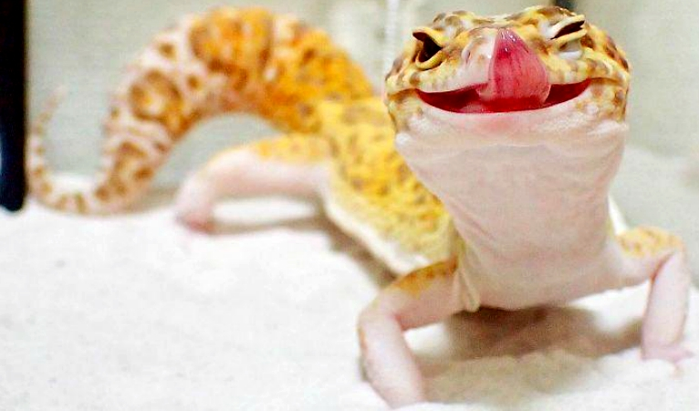
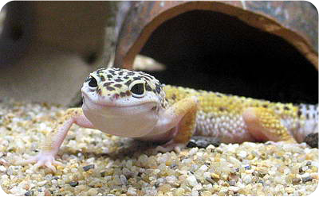
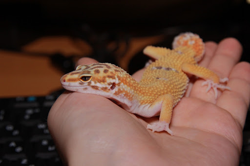
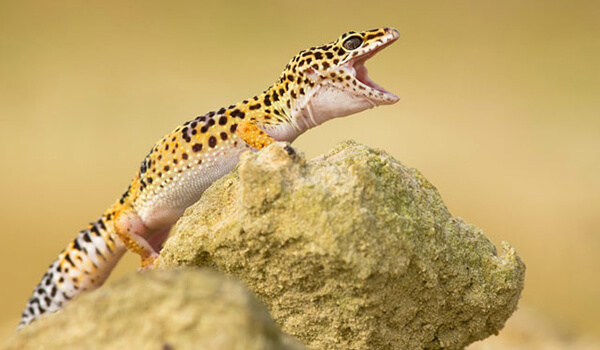
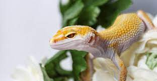
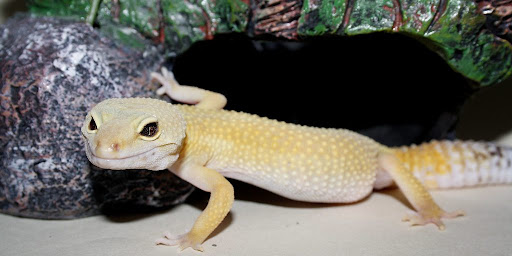
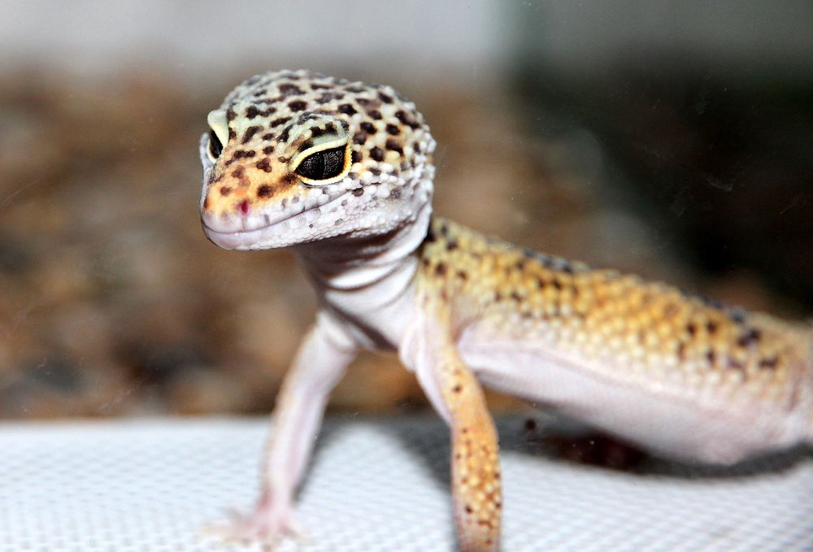
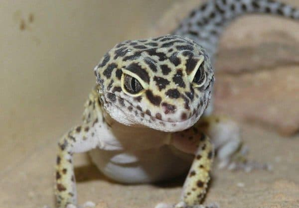

Киньябаев Артур
Увлечения
Увлечений не так уж и много: люблю воллейбол, компьютерные игры, хорошие фильмы. Сериалы особо не смотрю, потому что может затянуть и вообще забью на все остальное))
Что понравилось
Нравится, что наконец то начался хардкор, меньше болтаем и больше делаем)

Эублефары умеют моргать, подмигивать и даже строить глазки. Мало кто может устоять перед этим завораживающим умным взглядом. И всё это потому, что эублефары имеют подвижное веко, которое отсутствует у других гекконов. Само слово «эублефар» означает «имеющий веко».

Эублефары умеют улыбаться. У них очень своеобразная мимика и при длительном общении вы начинаете понимать, когда эублефар доволен. Это легко читается по большой широкой улыбке на счастливой мордочке.

У эублефаров нежная бархатистая кожа, особенно, на шее. Они совсем не склизкие, а наоборот, очень приятные на ощупь. Поэтому их очень приятно держать в руках. На теле у эублефаров присутствуют «пупырышки», что делает их кожу еще более интересной.

Взрослые эублефары имеют шикарные толстые хвосты, куда они откладывают жировые запасы, словно верблюды в горбы. Это служит им источником еды и воды в тяжелые времена и позволяет выживать в условиях сильной засухи.

Эублефары очень любят общение с людьми. В отличие от многих других рептилий эублефары очень быстро привыкают у человеку и охотно идут на контакт. Многие сами буквально просятся «на ручки». Им нравится человеческое тепло и они любят погреть пузико на ладошке или посидеть на плече у хозяина.

Взрослые эублефары имеют шикарные толстые хвосты, куда они откладывают жировые запасы, словно верблюды в горбы. Это служит им источником еды и воды в тяжелые времена и позволяет выживать в условиях сильной засухи.

Если взять домашнего эублефара за хвост, то он не отбросит его, как дикая ящерица. Всё это потому, что хвост ящерицы сбрасывают только в случае сильного испуга, острой боли или же для того, чтобы отделаться от преследователей. А так как в домашних условиях человек не предоставляет угрозы, и даже наоборот, является для эублефаров источником тепла, радости и питания, то он может смело взять эублефара за хвост. Конечно, мы не призываем таскать эублефара за хвост, но факт остается фактом.

Эублефары не ночные животные, а сумеречные. Они наиболее активны рано утром на расходе солнца и вечером. Когда хозяева собираются на работу, и когда возвращаются домой эублефары готовы к общению. Ночью и днем эублефары предпочитают отдыхать. Впрочем, они легко могут подстраиваться под ритм человека и будут наиболее активны тогда, когда их кормят и общаются с ними.